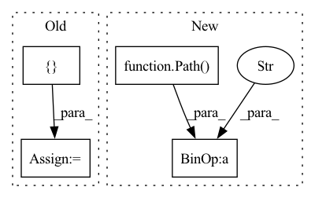

Pattern ID :11580
Before Change
// for local usage
root_dir = Path(__file__).parent.parent.parent
req_file = root_dir / "requirements.txt"
req_dict = {}
with req_file.open() as f:
lines = f.readlines()
for line in lines:After Change
lines = f.readlines()
except FileNotFoundError as e:
// where areth thou ?
root_dir = Path( __file__) .parent.parent.parent.parent
req_file = root_dir / "requirements.txt"
with req_file.open() as f:
lines = f.readlines()
for line in lines:In pattern: SUPERPATTERN
Frequency: 5
Non-data size: 4
Instances Fragment ID: 39260263
Project Name: explosion/spaCy
Commit Name: 9f1447bf7160dfdc354d8eb386ee169a330dbbca
Time: 2020-02-19
Author: sofie.vanlandeghem@gmail.com
File Name: spacy/tests/test_requirements.py
M Class Name: AnonimousClass
N Class Name: AnonimousClass
M Method Name: test_build_dependencies(1)
N Method Name: test_build_dependencies(1)
M Parent Class:
N Parent Class:
M File Name: spacy/tests/test_requirements.py
N File Name: spacy/tests/test_requirements.py
M Start Line: 11
M End Line: 26
N Start Line: 11
N End Line: 32
Before Change
def test_post_to_studio_include_prefix_if_needed(tmp_dir, mocker, monkeypatch):
dvc_repo = mocker.MagicMock()
dvc_repo.scm.get_rev.return_value = "f" * 40
dvc_repo.index.stages = []
dvc_repo.scm.get_ref.return_value = None
mocker.patch("dvclive.live.get_dvc_repo", return_value=dvc_repo)
mocked_response = mocker.MagicMock()After Change
dvc_path = Path(live.dvc_file).as_posix()
metrics_path = Path(live.metrics_file).as_posix()
foo_path = (Path(live.plots_dir) / Metric.subfolder / "foo.tsv" ).as_posix()
mocked_post.assert_called_with(
"https://0.0.0.0", Fragment ID: 39260261
Project Name: iterative/dvclive
Commit Name: 2fd0660b0fa2ba61a18afbafcd0e9cf4067ae3ec
Time: 2023-03-17
Author: daviddelaiglesiacastro@gmail.com
File Name: tests/test_studio.py
M Class Name: AnonimousClass
N Class Name: AnonimousClass
M Method Name: test_post_to_studio_include_prefix_if_needed(3)
N Method Name: test_post_to_studio_include_prefix_if_needed(3)
M Parent Class:
N Parent Class:
M File Name: tests/test_studio.py
N File Name: tests/test_studio.py
M Start Line: 246
M End Line: 266
N Start Line: 215
N End Line: 223
Before Change
def test_post_to_studio_shorten_names(tmp_dir, mocker, monkeypatch):
dvc_repo = mocker.MagicMock()
dvc_repo.scm.get_rev.return_value = "f" * 40
dvc_repo.index.stages = []
dvc_repo.scm.get_ref.return_value = None
mocker.patch("dvclive.live.get_dvc_repo", return_value=dvc_repo)
mocked_response = mocker.MagicMock()After Change
dvc_path = Path(live.dvc_file).as_posix()
metrics_path = Path(live.metrics_file).as_posix()
plots_path = Path( live.plots_dir)
loss_path = (plots_path / Metric.subfolder / "eval/loss.tsv" ).as_posix()
mocked_post.assert_called_with(
"https://0.0.0.0", Fragment ID: 39260276
Project Name: iterative/dvclive
Commit Name: 2fd0660b0fa2ba61a18afbafcd0e9cf4067ae3ec
Time: 2023-03-17
Author: daviddelaiglesiacastro@gmail.com
File Name: tests/test_studio.py
M Class Name: AnonimousClass
N Class Name: AnonimousClass
M Method Name: test_post_to_studio_shorten_names(3)
N Method Name: test_post_to_studio_shorten_names(3)
M Parent Class:
N Parent Class:
M File Name: tests/test_studio.py
N File Name: tests/test_studio.py
M Start Line: 290
M End Line: 309
N Start Line: 246
N End Line: 255
Before Change
args = parse_args()
lines = [
f"Raw data path: {args.raw_data}",
f"Data output path: {args.prepared_data}"After Change
mlflow.log_metric("val size", val.shape[0])
mlflow.log_metric("test size", test.shape[0])
train.to_parquet((Path( args.train_data) / "train.parquet" ))
val.to_parquet((Path(args.val_data) / "val.parquet"))
test.to_parquet((Path(args.test_data) / "test.parquet"))
Fragment ID: 39260275
Project Name: azure/mlops-project-template
Commit Name: e4910d82941b11b64f2c8efe79516dd6d22f0884
Time: 2022-11-09
Author: 8880364+cindyweng@users.noreply.github.com
File Name: classical/aml-cli-v2/data-science/src/prep.py
M Class Name: AnonimousClass
N Class Name: AnonimousClass
M Method Name: main(1)
N Method Name: main(0)
M Parent Class:
N Parent Class:
M File Name: classical/aml-cli-v2/data-science/src/prep.py
N File Name: classical/aml-cli-v2/data-science/src/prep.py
M Start Line: 32
M End Line: 72
N Start Line: 68
N End Line: 102
Before Change
args = parse_args()
lines = [
f"Raw data path: {args.raw_data}",
f"Data output path: {args.prepared_data}"After Change
mlflow.log_metric("val size", val.shape[0])
mlflow.log_metric("test size", test.shape[0])
train.to_parquet((Path( args.train_data) / "train.parquet" ))
val.to_parquet((Path(args.val_data) / "val.parquet"))
test.to_parquet((Path(args.test_data) / "test.parquet"))
Fragment ID: 39260269
Project Name: azure/mlops-project-template
Commit Name: 8bd6f11bb9b974942c487be9f250a4cc855fe227
Time: 2022-11-14
Author: 8880364+cindyweng@users.noreply.github.com
File Name: classical/aml-cli-v2/data-science/src/prep.py
M Class Name: AnonimousClass
N Class Name: AnonimousClass
M Method Name: main(1)
N Method Name: main(0)
M Parent Class:
N Parent Class:
M File Name: classical/aml-cli-v2/data-science/src/prep.py
N File Name: classical/aml-cli-v2/data-science/src/prep.py
M Start Line: 32
M End Line: 72
N Start Line: 68
N End Line: 102